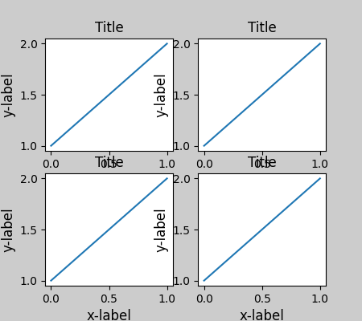
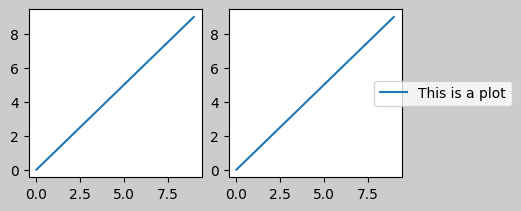
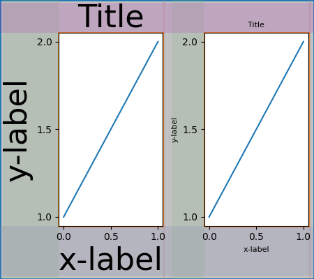
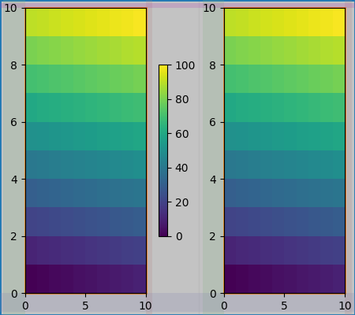

Note
Go to the end to download the full example code
Constrained Layout Guide#
Use constrained layout to fit plots within your figure cleanly.
Constrained layout automatically adjusts subplots so that decorations like tick labels, legends, and colorbars do not overlap, while still preserving the logical layout requested by the user.
Constrained layout is similar to Tight
layout, but is substantially more
flexible. It handles colorbars placed on multiple Axes
(Placing Colorbars) nested layouts (subfigures) and Axes that
span rows or columns (subplot_mosaic), striving to align spines from
Axes in the same row or column. In addition, Compressed layout will try and move fixed aspect-ratio Axes closer together.
These features are described in this document, as well as some
implementation details discussed at the end.
Constrained layout typically needs to be activated before any Axes are added to a figure. Two ways of doing so are
using the respective argument to
subplots,figure,subplot_mosaice.g.:plt.subplots(layout="constrained")
activate it via rcParams, like:
plt.rcParams['figure.constrained_layout.use'] = True
Those are described in detail throughout the following sections.
Warning
Calling plt.tight_layout() will turn off constrained layout!
Simple example#
In Matplotlib, the location of Axes (including subplots) are specified in normalized figure coordinates. It can happen that your axis labels or titles (or sometimes even ticklabels) go outside the figure area, and are thus clipped.
import matplotlib.pyplot as plt
import numpy as np
import matplotlib.colors as mcolors
import matplotlib.gridspec as gridspec
plt.rcParams['savefig.facecolor'] = "0.8"
plt.rcParams['figure.figsize'] = 4.5, 4.
plt.rcParams['figure.max_open_warning'] = 50
def example_plot(ax, fontsize=12, hide_labels=False):
ax.plot([1, 2])
ax.locator_params(nbins=3)
if hide_labels:
ax.set_xticklabels([])
ax.set_yticklabels([])
else:
ax.set_xlabel('x-label', fontsize=fontsize)
ax.set_ylabel('y-label', fontsize=fontsize)
ax.set_title('Title', fontsize=fontsize)
fig, ax = plt.subplots(layout=None)
example_plot(ax, fontsize=24)
To prevent this, the location of Axes needs to be adjusted. For
subplots, this can be done manually by adjusting the subplot parameters
using Figure.subplots_adjust. However, specifying your figure with the
layout="constrained" keyword argument will do the adjusting
automatically.
fig, ax = plt.subplots(layout="constrained")
example_plot(ax, fontsize=24)
When you have multiple subplots, often you see labels of different Axes overlapping each other.
Specifying layout="constrained" in the call to plt.subplots
causes the layout to be properly constrained.
Colorbars#
If you create a colorbar with Figure.colorbar, you need to make room for
it. Constrained layout does this automatically. Note that if you
specify use_gridspec=True it will be ignored because this option is made
for improving the layout via tight_layout.
Note
For the pcolormesh keyword arguments (pc_kwargs) we use a
dictionary to keep the calls consistent across this document.
arr = np.arange(100).reshape((10, 10))
norm = mcolors.Normalize(vmin=0., vmax=100.)
# see note above: this makes all pcolormesh calls consistent:
pc_kwargs = {'rasterized': True, 'cmap': 'viridis', 'norm': norm}
fig, ax = plt.subplots(figsize=(4, 4), layout="constrained")
im = ax.pcolormesh(arr, **pc_kwargs)
fig.colorbar(im, ax=ax, shrink=0.6)
If you specify a list of Axes (or other iterable container) to the
ax argument of colorbar, constrained layout will take space from
the specified Axes.
fig, axs = plt.subplots(2, 2, figsize=(4, 4), layout="constrained")
for ax in axs.flat:
im = ax.pcolormesh(arr, **pc_kwargs)
fig.colorbar(im, ax=axs, shrink=0.6)
If you specify a list of Axes from inside a grid of Axes, the colorbar will steal space appropriately, and leave a gap, but all subplots will still be the same size.
fig, axs = plt.subplots(3, 3, figsize=(4, 4), layout="constrained")
for ax in axs.flat:
im = ax.pcolormesh(arr, **pc_kwargs)
fig.colorbar(im, ax=axs[1:, 1], shrink=0.8)
fig.colorbar(im, ax=axs[:, -1], shrink=0.6)
Suptitle#
Constrained layout can also make room for suptitle.
fig, axs = plt.subplots(2, 2, figsize=(4, 4), layout="constrained")
for ax in axs.flat:
im = ax.pcolormesh(arr, **pc_kwargs)
fig.colorbar(im, ax=axs, shrink=0.6)
fig.suptitle('Big Suptitle')
Legends#
Legends can be placed outside of their parent axis.
Constrained layout is designed to handle this for Axes.legend().
However, constrained layout does not handle legends being created via
Figure.legend() (yet).
However, this will steal space from a subplot layout:
In order for a legend or other artist to not steal space
from the subplot layout, we can leg.set_in_layout(False).
Of course this can mean the legend ends up
cropped, but can be useful if the plot is subsequently called
with fig.savefig('outname.png', bbox_inches='tight'). Note,
however, that the legend's get_in_layout status will have to be
toggled again to make the saved file work, and we must manually
trigger a draw if we want constrained layout to adjust the size
of the Axes before printing.
fig, axs = plt.subplots(1, 2, figsize=(4, 2), layout="constrained")
axs[0].plot(np.arange(10))
axs[1].plot(np.arange(10), label='This is a plot')
leg = axs[1].legend(loc='center left', bbox_to_anchor=(0.8, 0.5))
leg.set_in_layout(False)
# trigger a draw so that constrained layout is executed once
# before we turn it off when printing....
fig.canvas.draw()
# we want the legend included in the bbox_inches='tight' calcs.
leg.set_in_layout(True)
# we don't want the layout to change at this point.
fig.set_layout_engine('none')
try:
fig.savefig('../../../doc/_static/constrained_layout_1b.png',
bbox_inches='tight', dpi=100)
except FileNotFoundError:
# this allows the script to keep going if run interactively and
# the directory above doesn't exist
pass
The saved file looks like:
A better way to get around this awkwardness is to simply
use the legend method provided by Figure.legend:
fig, axs = plt.subplots(1, 2, figsize=(4, 2), layout="constrained")
axs[0].plot(np.arange(10))
lines = axs[1].plot(np.arange(10), label='This is a plot')
labels = [l.get_label() for l in lines]
leg = fig.legend(lines, labels, loc='center left',
bbox_to_anchor=(0.8, 0.5), bbox_transform=axs[1].transAxes)
try:
fig.savefig('../../../doc/_static/constrained_layout_2b.png',
bbox_inches='tight', dpi=100)
except FileNotFoundError:
# this allows the script to keep going if run interactively and
# the directory above doesn't exist
pass

The saved file looks like:

Padding and spacing#
Padding between Axes is controlled in the horizontal by w_pad and
wspace, and vertical by h_pad and hspace. These can be edited
via set. w/h_pad are
the minimum space around the Axes in units of inches:
fig, axs = plt.subplots(2, 2, layout="constrained")
for ax in axs.flat:
example_plot(ax, hide_labels=True)
fig.get_layout_engine().set(w_pad=4 / 72, h_pad=4 / 72, hspace=0,
wspace=0)
Spacing between subplots is further set by wspace and hspace. These are specified as a fraction of the size of the subplot group as a whole. If these values are smaller than w_pad or h_pad, then the fixed pads are used instead. Note in the below how the space at the edges doesn't change from the above, but the space between subplots does.
fig, axs = plt.subplots(2, 2, layout="constrained")
for ax in axs.flat:
example_plot(ax, hide_labels=True)
fig.get_layout_engine().set(w_pad=4 / 72, h_pad=4 / 72, hspace=0.2,
wspace=0.2)
If there are more than two columns, the wspace is shared between them, so here the wspace is divided in two, with a wspace of 0.1 between each column:
fig, axs = plt.subplots(2, 3, layout="constrained")
for ax in axs.flat:
example_plot(ax, hide_labels=True)
fig.get_layout_engine().set(w_pad=4 / 72, h_pad=4 / 72, hspace=0.2,
wspace=0.2)
GridSpecs also have optional hspace and wspace keyword arguments, that will be used instead of the pads set by constrained layout:
fig, axs = plt.subplots(2, 2, layout="constrained",
gridspec_kw={'wspace': 0.3, 'hspace': 0.2})
for ax in axs.flat:
example_plot(ax, hide_labels=True)
# this has no effect because the space set in the gridspec trumps the
# space set in *constrained layout*.
fig.get_layout_engine().set(w_pad=4 / 72, h_pad=4 / 72, hspace=0.0,
wspace=0.0)
Spacing with colorbars#
Colorbars are placed a distance pad from their parent, where pad is a fraction of the width of the parent(s). The spacing to the next subplot is then given by w/hspace.
fig, axs = plt.subplots(2, 2, layout="constrained")
pads = [0, 0.05, 0.1, 0.2]
for pad, ax in zip(pads, axs.flat):
pc = ax.pcolormesh(arr, **pc_kwargs)
fig.colorbar(pc, ax=ax, shrink=0.6, pad=pad)
ax.set_xticklabels([])
ax.set_yticklabels([])
ax.set_title(f'pad: {pad}')
fig.get_layout_engine().set(w_pad=2 / 72, h_pad=2 / 72, hspace=0.2,
wspace=0.2)
rcParams#
There are five rcParams
that can be set, either in a script or in the matplotlibrc
file. They all have the prefix figure.constrained_layout:
use: Whether to use constrained layout. Default is False
w_pad, h_pad: Padding around Axes objects. Float representing inches. Default is 3./72. inches (3 pts)
wspace, hspace: Space between subplot groups. Float representing a fraction of the subplot widths being separated. Default is 0.02.
plt.rcParams['figure.constrained_layout.use'] = True
fig, axs = plt.subplots(2, 2, figsize=(3, 3))
for ax in axs.flat:
example_plot(ax)
Use with GridSpec#
Constrained layout is meant to be used
with subplots(),
subplot_mosaic(), or
GridSpec() with
add_subplot().
Note that in what follows layout="constrained"
plt.rcParams['figure.constrained_layout.use'] = False
fig = plt.figure(layout="constrained")
gs1 = gridspec.GridSpec(2, 1, figure=fig)
ax1 = fig.add_subplot(gs1[0])
ax2 = fig.add_subplot(gs1[1])
example_plot(ax1)
example_plot(ax2)
More complicated gridspec layouts are possible. Note here we use the
convenience functions add_gridspec and
subgridspec.
fig = plt.figure(layout="constrained")
gs0 = fig.add_gridspec(1, 2)
gs1 = gs0[0].subgridspec(2, 1)
ax1 = fig.add_subplot(gs1[0])
ax2 = fig.add_subplot(gs1[1])
example_plot(ax1)
example_plot(ax2)
gs2 = gs0[1].subgridspec(3, 1)
for ss in gs2:
ax = fig.add_subplot(ss)
example_plot(ax)
ax.set_title("")
ax.set_xlabel("")
ax.set_xlabel("x-label", fontsize=12)
Note that in the above the left and right columns don't have the same vertical extent. If we want the top and bottom of the two grids to line up then they need to be in the same gridspec. We need to make this figure larger as well in order for the Axes not to collapse to zero height:
fig = plt.figure(figsize=(4, 6), layout="constrained")
gs0 = fig.add_gridspec(6, 2)
ax1 = fig.add_subplot(gs0[:3, 0])
ax2 = fig.add_subplot(gs0[3:, 0])
example_plot(ax1)
example_plot(ax2)
ax = fig.add_subplot(gs0[0:2, 1])
example_plot(ax, hide_labels=True)
ax = fig.add_subplot(gs0[2:4, 1])
example_plot(ax, hide_labels=True)
ax = fig.add_subplot(gs0[4:, 1])
example_plot(ax, hide_labels=True)
fig.suptitle('Overlapping Gridspecs')
This example uses two gridspecs to have the colorbar only pertain to
one set of pcolors. Note how the left column is wider than the
two right-hand columns because of this. Of course, if you wanted the
subplots to be the same size you only needed one gridspec. Note that
the same effect can be achieved using subfigures.
fig = plt.figure(layout="constrained")
gs0 = fig.add_gridspec(1, 2, figure=fig, width_ratios=[1, 2])
gs_left = gs0[0].subgridspec(2, 1)
gs_right = gs0[1].subgridspec(2, 2)
for gs in gs_left:
ax = fig.add_subplot(gs)
example_plot(ax)
axs = []
for gs in gs_right:
ax = fig.add_subplot(gs)
pcm = ax.pcolormesh(arr, **pc_kwargs)
ax.set_xlabel('x-label')
ax.set_ylabel('y-label')
ax.set_title('title')
axs += [ax]
fig.suptitle('Nested plots using subgridspec')
fig.colorbar(pcm, ax=axs)
Rather than using subgridspecs, Matplotlib now provides subfigures
which also work with constrained layout:
fig = plt.figure(layout="constrained")
sfigs = fig.subfigures(1, 2, width_ratios=[1, 2])
axs_left = sfigs[0].subplots(2, 1)
for ax in axs_left.flat:
example_plot(ax)
axs_right = sfigs[1].subplots(2, 2)
for ax in axs_right.flat:
pcm = ax.pcolormesh(arr, **pc_kwargs)
ax.set_xlabel('x-label')
ax.set_ylabel('y-label')
ax.set_title('title')
fig.colorbar(pcm, ax=axs_right)
fig.suptitle('Nested plots using subfigures')
Manually setting Axes positions#
There can be good reasons to manually set an Axes position. A manual call
to set_position will set the Axes so constrained layout has
no effect on it anymore. (Note that constrained layout still leaves the
space for the Axes that is moved).
fig, axs = plt.subplots(1, 2, layout="constrained")
example_plot(axs[0], fontsize=12)
axs[1].set_position([0.2, 0.2, 0.4, 0.4])
Grids of fixed aspect-ratio Axes: "compressed" layout#
Constrained layout operates on the grid of "original" positions for Axes. However, when Axes have fixed aspect ratios, one side is usually made shorter, and leaves large gaps in the shortened direction. In the following, the Axes are square, but the figure quite wide so there is a horizontal gap:
fig, axs = plt.subplots(2, 2, figsize=(5, 3),
sharex=True, sharey=True, layout="constrained")
for ax in axs.flat:
ax.imshow(arr)
fig.suptitle("fixed-aspect plots, layout='constrained'")
One obvious way of fixing this is to make the figure size more square,
however, closing the gaps exactly requires trial and error. For simple grids
of Axes we can use layout="compressed" to do the job for us:
fig, axs = plt.subplots(2, 2, figsize=(5, 3),
sharex=True, sharey=True, layout='compressed')
for ax in axs.flat:
ax.imshow(arr)
fig.suptitle("fixed-aspect plots, layout='compressed'")
Manually turning off constrained layout#
Constrained layout usually adjusts the Axes positions on each draw
of the figure. If you want to get the spacing provided by
constrained layout but not have it update, then do the initial
draw and then call fig.set_layout_engine('none').
This is potentially useful for animations where the tick labels may
change length.
Note that constrained layout is turned off for ZOOM and PAN
GUI events for the backends that use the toolbar. This prevents the
Axes from changing position during zooming and panning.
Limitations#
Incompatible functions#
Constrained layout will work with pyplot.subplot, but only if the
number of rows and columns is the same for each call.
The reason is that each call to pyplot.subplot will create a new
GridSpec instance if the geometry is not the same, and
constrained layout. So the following works fine:
fig = plt.figure(layout="constrained")
ax1 = plt.subplot(2, 2, 1)
ax2 = plt.subplot(2, 2, 3)
# third Axes that spans both rows in second column:
ax3 = plt.subplot(2, 2, (2, 4))
example_plot(ax1)
example_plot(ax2)
example_plot(ax3)
plt.suptitle('Homogenous nrows, ncols')
but the following leads to a poor layout:
fig = plt.figure(layout="constrained")
ax1 = plt.subplot(2, 2, 1)
ax2 = plt.subplot(2, 2, 3)
ax3 = plt.subplot(1, 2, 2)
example_plot(ax1)
example_plot(ax2)
example_plot(ax3)
plt.suptitle('Mixed nrows, ncols')
Similarly,
subplot2grid works with the same limitation
that nrows and ncols cannot change for the layout to look good.
fig = plt.figure(layout="constrained")
ax1 = plt.subplot2grid((3, 3), (0, 0))
ax2 = plt.subplot2grid((3, 3), (0, 1), colspan=2)
ax3 = plt.subplot2grid((3, 3), (1, 0), colspan=2, rowspan=2)
ax4 = plt.subplot2grid((3, 3), (1, 2), rowspan=2)
example_plot(ax1)
example_plot(ax2)
example_plot(ax3)
example_plot(ax4)
fig.suptitle('subplot2grid')
Other caveats#
Constrained layout only considers ticklabels, axis labels, titles, and legends. Thus, other artists may be clipped and also may overlap.
It assumes that the extra space needed for ticklabels, axis labels, and titles is independent of original location of Axes. This is often true, but there are rare cases where it is not.
There are small differences in how the backends handle rendering fonts, so the results will not be pixel-identical.
An artist using Axes coordinates that extend beyond the Axes boundary will result in unusual layouts when added to an Axes. This can be avoided by adding the artist directly to the
Figureusingadd_artist(). SeeConnectionPatchfor an example.
Debugging#
Constrained layout can fail in somewhat unexpected ways. Because it uses a constraint solver the solver can find solutions that are mathematically correct, but that aren't at all what the user wants. The usual failure mode is for all sizes to collapse to their smallest allowable value. If this happens, it is for one of two reasons:
There was not enough room for the elements you were requesting to draw.
There is a bug - in which case open an issue at matplotlib/matplotlib#issues.
If there is a bug, please report with a self-contained example that does not require outside data or dependencies (other than numpy).
Notes on the algorithm#
The algorithm for the constraint is relatively straightforward, but has some complexity due to the complex ways we can lay out a figure.
Layout in Matplotlib is carried out with gridspecs
via the GridSpec class. A gridspec is a logical division of the figure
into rows and columns, with the relative width of the Axes in those
rows and columns set by width_ratios and height_ratios.
In constrained layout, each gridspec gets a layoutgrid associated with
it. The layoutgrid has a series of left and right variables
for each column, and bottom and top variables for each row, and
further it has a margin for each of left, right, bottom and top. In each
row, the bottom/top margins are widened until all the decorators
in that row are accommodated. Similarly, for columns and the left/right
margins.
Simple case: one Axes#
For a single Axes the layout is straight forward. There is one parent
layoutgrid for the figure consisting of one column and row, and
a child layoutgrid for the gridspec that contains the Axes, again
consisting of one row and column. Space is made for the "decorations" on
each side of the Axes. In the code, this is accomplished by the entries in
do_constrained_layout() like:
gridspec._layoutgrid[0, 0].edit_margin_min('left',
-bbox.x0 + pos.x0 + w_pad)
where bbox is the tight bounding box of the Axes, and pos its
position. Note how the four margins encompass the Axes decorations.
from matplotlib._layoutgrid import plot_children
fig, ax = plt.subplots(layout="constrained")
example_plot(ax, fontsize=24)
plot_children(fig)
Simple case: two Axes#
When there are multiple Axes they have their layouts bound in simple ways. In this example the left Axes has much larger decorations than the right, but they share a bottom margin, which is made large enough to accommodate the larger xlabel. Same with the shared top margin. The left and right margins are not shared, and hence are allowed to be different.
Two Axes and colorbar#
A colorbar is simply another item that expands the margin of the parent layoutgrid cell:
Colorbar associated with a Gridspec#
If a colorbar belongs to more than one cell of the grid, then it makes a larger margin for each:
fig, axs = plt.subplots(2, 2, layout="constrained")
for ax in axs.flat:
im = ax.pcolormesh(arr, **pc_kwargs)
fig.colorbar(im, ax=axs, shrink=0.6)
plot_children(fig)
Uneven sized Axes#
There are two ways to make Axes have an uneven size in a Gridspec layout, either by specifying them to cross Gridspecs rows or columns, or by specifying width and height ratios.
The first method is used here. Note that the middle top and
bottom margins are not affected by the left-hand column. This
is a conscious decision of the algorithm, and leads to the case where
the two right-hand Axes have the same height, but it is not 1/2 the height
of the left-hand Axes. This is consistent with how gridspec works
without constrained layout.
fig = plt.figure(layout="constrained")
gs = gridspec.GridSpec(2, 2, figure=fig)
ax = fig.add_subplot(gs[:, 0])
im = ax.pcolormesh(arr, **pc_kwargs)
ax = fig.add_subplot(gs[0, 1])
im = ax.pcolormesh(arr, **pc_kwargs)
ax = fig.add_subplot(gs[1, 1])
im = ax.pcolormesh(arr, **pc_kwargs)
plot_children(fig)
One case that requires finessing is if margins do not have any artists constraining their width. In the case below, the right margin for column 0 and the left margin for column 3 have no margin artists to set their width, so we take the maximum width of the margin widths that do have artists. This makes all the Axes have the same size:
fig = plt.figure(layout="constrained")
gs = fig.add_gridspec(2, 4)
ax00 = fig.add_subplot(gs[0, 0:2])
ax01 = fig.add_subplot(gs[0, 2:])
ax10 = fig.add_subplot(gs[1, 1:3])
example_plot(ax10, fontsize=14)
plot_children(fig)
plt.show()
Total running time of the script: (0 minutes 10.750 seconds)